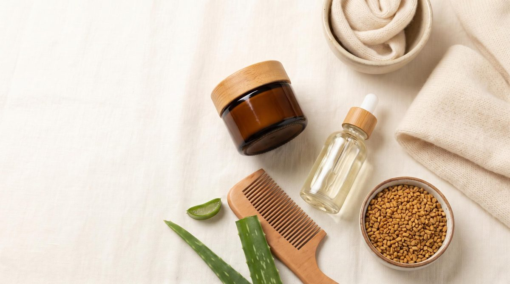
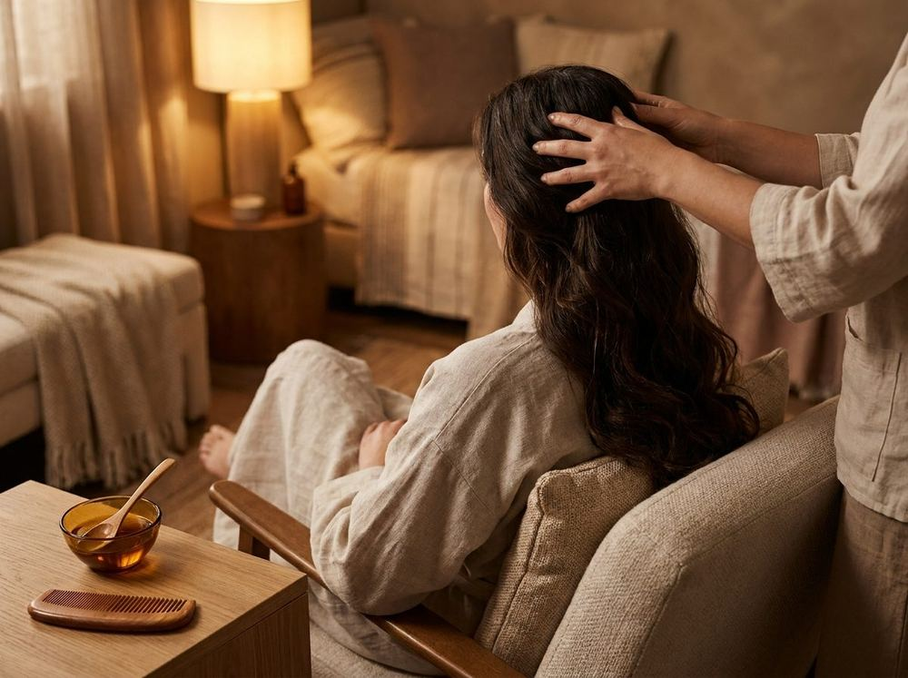
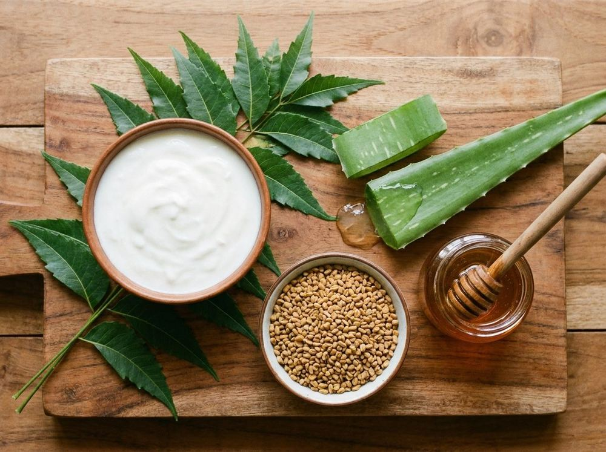

Winter Skin Care, Hair Fall & Dandruff: Causes and Natural Remedies That Work

As soon as the weather turns cold in Pakistan, the same complaints start showing up: tight, flaky skin, cracked lips and heels, a scalp that itches, white flakes on dark clothes, and more hair on the brush than usual. If this sounds like you, you are not alone. Winter skin care and winter hair care need a different approach than summer, and most problems can be managed with small daily changes and a few simple home remedies.
- Why winter damages skin and hair
- Winter skin problems and solutions
- Hair fall in winter: causes and remedies
- Dandruff in winter: how to stop it
- When home remedies are not enough: PRP for hair fall
- Collagen supplements: science vs marketing
- Winter breakouts and acne scars
- What to eat for healthier skin and hair
- Simple daily winter routine
- When to see a doctor
- FAQs
Why Winter Damages Skin and Hair
Cold air holds less moisture, and indoor heating (gas heaters, electric heaters, blowers) dries the air even further. Your skin barrier loses water faster, and your scalp loses its natural oil balance. A few common triggers make it worse:
- Very hot showers that strip natural oils from skin and scalp.
- Drinking less water because you do not feel thirsty in the cold.
- Wool caps, scarves and sweaters that rub against the scalp and neck and trap sweat.
- Less sunlight, which can lower vitamin D levels.
- Washing hair less often or skipping oiling, which allows buildup on the scalp.
Winter Skin Problems and Solutions
1. Dry, flaky and itchy skin
What helps: Moisturize within three minutes of bathing while skin is still slightly damp. Choose a thick cream or ointment over a light lotion. Use lukewarm water, not hot, and keep showers short.
Home remedy: Mix a teaspoon of raw honey with a tablespoon of plain yogurt and leave it on the face for 10 minutes. For the body, a few spoons of coconut or almond oil applied after a bath work well.
2. Chapped lips
Avoid licking your lips, which makes them drier. Apply a plain lip balm or a thin layer of ghee, coconut oil or petroleum jelly before bed. A gentle scrub of sugar and honey once a week removes dead skin.
3. Cracked heels and rough hands
Soak feet in warm water for 10 minutes, gently remove dead skin with a pumice stone, then apply a thick layer of petroleum jelly or foot cream and wear cotton socks overnight. Apply hand cream after every hand wash and wear gloves for washing dishes.
4. Dull skin
Exfoliate gently once or twice a week only. Over-scrubbing in winter damages the skin barrier. A besan (gram flour), milk and a pinch of turmeric mask is a traditional desi option, but do a patch test first, as turmeric can stain and irritate some skin.
Hair Fall in Winter: Causes and Remedies
Losing 50 to 100 hairs a day is normal. If you notice much more than that, winter dryness, a dry scalp, stress, poor diet, low iron or low vitamin D could be contributing. Some people also notice seasonal shedding in autumn and winter.

Why hair falls more in winter
- Dry scalp leads to weak, brittle strands that break easily.
- Hot water weakens hair and irritates the scalp.
- Static from wool caps and scarves causes breakage.
- Dandruff and scalp itching lead to scratching and hair damage.
- Low protein, iron or vitamin intake shows up in the hair first.
Natural remedies for hair fall
- Warm oil massage: Warm coconut, olive or castor oil slightly, massage the scalp for 5 to 10 minutes, leave for an hour or overnight, then wash. Massage improves comfort and helps spread the oil; oil also reduces protein loss from hair when washing.
- Methi (fenugreek) mask: Soak 2 tablespoons of methi seeds overnight, grind into a paste and apply to the scalp for 30 minutes before washing.
- Amla (Indian gooseberry): Amla oil or an amla powder and yogurt mask is a traditional hair tonic. Eating amla is also a good source of vitamin C.
- Aloe vera gel: Fresh gel applied to the scalp for 20 to 30 minutes soothes dryness and itching.
- Egg and yogurt mask: One egg with 2 tablespoons of yogurt for 20 minutes adds protein; rinse with cool water, not hot.
Hair care habits that reduce hair fall
- Wash with lukewarm water and finish with a cooler rinse.
- Do not tie wet hair tightly or sleep with it wet.
- Use a wide-tooth comb and avoid heavy brushing on wet hair.
- Line wool caps with a soft cotton or silk scarf.
- Trim split ends every 2 to 3 months.
Dandruff in Winter: How to Stop It
It helps to know which problem you have. Dry scalp produces small, dry, white flakes and the rest of your skin is usually dry too. True dandruff (seborrheic dermatitis) often gives larger, yellowish, oily flakes with redness and itching, and is linked to a yeast called Malassezia that lives on most scalps.
| Sign | Likely dry scalp | Likely dandruff |
|---|---|---|
| Flakes | Small, white, dry | Larger, yellowish, greasy |
| Scalp | Tight, dry | Oily, red, itchy |
| Best approach | Moisturize, oil, gentle shampoo | Anti-dandruff shampoo |

What actually works
- Anti-dandruff shampoo: Look for zinc pyrithione, ketoconazole, selenium sulfide or salicylic acid on the label. Use it 2 to 3 times a week and leave it on the scalp for 3 to 5 minutes before rinsing.
- Do not stop washing. Skipping hair wash makes flakes and buildup worse.
- Yogurt mask: Apply plain yogurt to the scalp for 20 minutes, then shampoo. It is soothing for a dry, irritated scalp.
- Neem water rinse: Boil a handful of neem leaves, cool the water and use it as a final rinse. Neem has a long traditional use for scalp problems.
- Apple cider vinegar rinse: Dilute 1 tablespoon in 1 cup of water, apply after shampooing and rinse out. Never use it undiluted, and skip it if your scalp is cracked or raw.
- Tea tree oil: Add 2 to 3 drops to a tablespoon of carrier oil (never directly on the scalp). Stop if you feel burning.
When Home Remedies Are Not Enough: PRP for Hair Fall
If hair fall continues for more than a few months despite good care, a dermatologist may look for the cause (low iron, thyroid problems, hormonal changes, genetic hair thinning) and may suggest treatments beyond oils and masks. One that many people ask about is PRP (platelet-rich plasma) therapy for hair.
What is PRP?
A small sample of your own blood is taken and spun in a machine to concentrate the platelets. This plasma is then injected into the scalp, with the aim of stimulating weak hair follicles.
Does it work?
Some studies show improvement in hair density and thickness, mainly in people with pattern hair thinning (androgenetic alopecia). However, results vary from person to person, the method is not standardized between clinics, and many studies are small. It is not a miracle cure and works best when started early, while follicles are still alive.
- Sessions: usually a series of several sessions about a month apart, followed by maintenance sessions.
- Cost: it can be expensive, so ask for the full cost of the course upfront.
- Side effects: mild pain, redness or swelling for a day or two are common.
- Not suitable for everyone: people with certain blood disorders or infections on the scalp should avoid it.
Collagen Supplements: Science vs Marketing
Collagen powders and tablets are heavily advertised for skin, hair and joints. Collagen is a protein that gives skin its firmness, so the idea sounds logical, but what does the evidence say?
- What happens when you swallow collagen: your digestive system breaks it down into amino acids and small peptides. It is not sent directly to your face.
- Skin: some trials suggest modest improvements in skin hydration and elasticity after a few months. Many of these studies are small and some are funded by supplement companies.
- Hair: evidence for hair growth or reduced hair fall is weak.
- Not a replacement: sunscreen, moisturizer, sleep and a protein-rich diet matter more than any powder.
Marine, bovine or plant collagen?
| Type | Source | Things to know |
|---|---|---|
| Bovine | Cow hide and bones | Most common and usually cheapest. Not suitable for vegetarians. |
| Marine | Fish skin and scales | Often marketed as better absorbed, but there is no strong proof it works better. Avoid if you have fish allergy. |
| Plant-based | Plants (no actual collagen) | Plants do not contain collagen. These products usually provide amino acids or vitamin C meant to support your body's own collagen. |
Before buying, check the label for added sugar, a clear dose and a trustworthy brand. Talk to your doctor first if you are pregnant, have allergies or kidney problems. A natural alternative is simply eating enough protein (eggs, daal, chicken, fish) with vitamin C foods such as kinnow and amla, since vitamin C is needed for your body to make collagen.
Winter Breakouts and Acne Scars
Many people think acne only happens in summer, but winter can trigger it too. Heavy creams, dry skin that overproduces oil, and harsh anti-acne products that strip the skin can all cause breakouts.
Winter acne tips
- Use a gentle cleanser and a light, non-comedogenic moisturizer, even if your skin is oily.
- Do not combine too many active products (retinol, strong acids and scrubs) at once, which damages the skin barrier.
- Do not pick or squeeze pimples. This is the main cause of lasting marks and scars.
- Use sunscreen daily, since sun exposure makes dark acne marks last longer.
Acne marks vs acne scars
Marks are flat dark or red spots that usually fade over weeks to months. Scars are changes in the skin texture, such as small deep pits (ice pick), wider box-shaped dents (boxcar) or soft rolling dents. Scars do not disappear on their own.
A dermatologist may suggest options such as chemical peels, microneedling, laser treatment, subcision or fillers depending on the scar type. Improvement is usually gradual, often needs more than one session, and complete removal of scars is not realistic. Treat active acne first, and avoid unproven home remedies like lemon juice or toothpaste on the face, which can burn and darken skin.
What to Eat for Healthier Skin and Hair
Skin and hair are built from what you eat. In winter, these foods are easy to include in a Pakistani diet:
- Protein: eggs, daal, chana, chicken, fish and dairy.
- Healthy fats: walnuts, almonds, flaxseeds and a little desi ghee.
- Iron-rich foods: spinach (palak), dates, liver, lentils and jaggery. Pair with vitamin C such as oranges to help absorption.
- Vitamin C: kinnow, oranges, amla and guava.
- Vitamin D: 15 to 20 minutes of midday sun when possible, plus eggs and fortified milk. If you suspect a deficiency, get a test rather than guessing.
- Fluids: keep drinking water, and add warm drinks like green tea, kahwa or lemon-honey water.
Simple Daily Winter Routine
| When | Skin | Hair |
|---|---|---|
| Morning | Gentle cleanser, moisturizer, sunscreen | Comb gently; cover hair with a cotton-lined cap if needed |
| After bath | Moisturize body within minutes | Pat dry, do not rub hard |
| Weekly | One gentle exfoliation, one hydrating mask | One or two oil massages, 2 to 3 shampoos |
| Night | Moisturizer, lip balm, heel cream with socks | Loose braid; avoid sleeping with wet hair |
A small tip: place a bowl of water or use a humidifier in your room if you use a heater, to stop the air becoming too dry.
When to See a Doctor
- Hair falling out in patches or very suddenly, or thinning that keeps getting worse.
- Severe itching, redness, oozing, sores or thick scales on the scalp or skin.
- Dandruff that does not improve after 3 to 4 weeks of an anti-dandruff shampoo.
- Skin that cracks and bleeds, or signs of eczema or psoriasis.
- Extreme tiredness along with hair fall, which may point to low iron, thyroid problems or other conditions.
FAQs
Why does my hair fall more in winter?
Dry scalp, hot water, friction from caps and scarves, dandruff and nutritional gaps are the usual reasons. Some people also notice seasonal shedding.
Is dandruff worse in winter?
For many people, yes. Cold, dry air and indoor heating dry the scalp, and heavy clothing can irritate it.
How often should I wash my hair in winter?
Two to three times a week works for most people. Wash more often if your scalp is oily or you have dandruff.
Can I use hot water for bathing in winter?
Use lukewarm water for the body and a cooler rinse for hair. Very hot water strips natural oils and worsens dryness.
Do home remedies really work?
They can soothe dryness and support scalp and skin health, but results vary. If a problem is persistent or severe, see a doctor.
Does PRP really work for hair fall?
It can help some people with pattern hair thinning, but results vary and it needs several sessions. It does not treat hair fall caused by deficiencies or thyroid problems.
Do collagen supplements work for skin?
Some small studies show modest improvement in skin hydration and elasticity, but the evidence is limited. They are not a replacement for sunscreen, moisturizer and a balanced diet.
Can acne scars be removed completely?
Treatments can improve their appearance, but complete removal is usually not possible. A dermatologist can suggest options based on the type of scar.
Final Thoughts
Winter does not have to mean dry skin, itchy scalp and falling hair. Moisturize well, switch to lukewarm water, oil your scalp regularly, eat nourishing foods and treat dandruff with the right shampoo. Stay consistent for a few weeks and your skin and hair will usually show the difference. If you try any of these remedies, I would love to hear which ones worked for you.
← Back to all articles